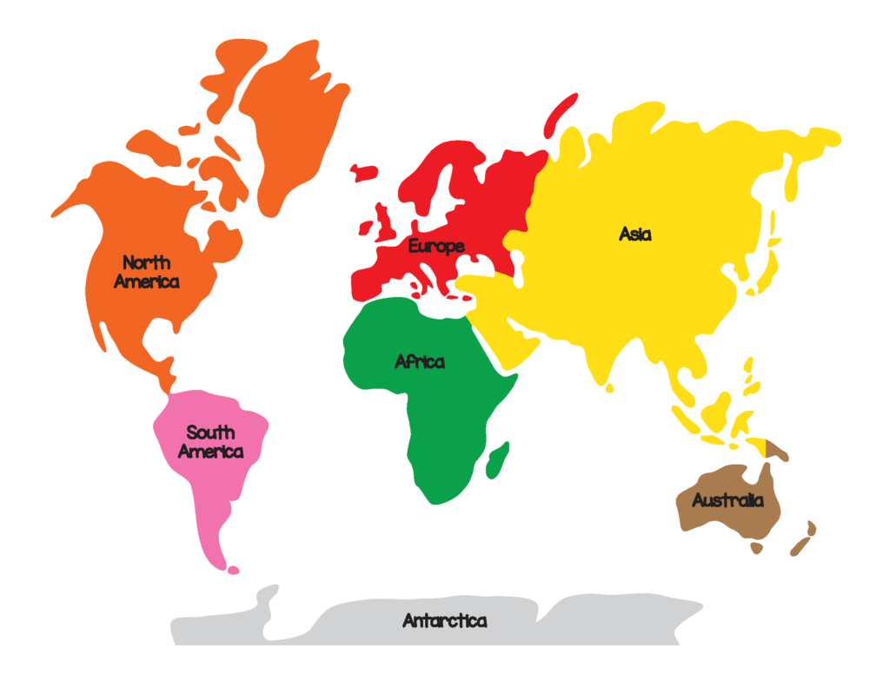

A continent is one of several large landmasses.
Generally identified by convention rather than any strict criteria, up to seven geographical regions are commonly regarded as continents.
Ordered from largest in area to smallest, these seven regions are: Asia, Africa, North America, South America, Antarctica, Europe, and Australia.
Variations with fewer continents may merge some of these, for example some systems include Afro-Eurasia, America or Eurasia as single continents.
Oceanic islands are frequently grouped with a nearby continent to divide all the world's land into geographical regions.
Under this scheme, most of the island countries and territories in the Pacific Ocean are grouped together with the continent of Australia to form a geographical region called Oceania.
Asia, the world’s largest and most diverse continent. It occupies the eastern four-fifths of the giant Eurasian landmass.
Asia is more a geographic term than a homogeneous continent, and the use of the term to describe such a vast area always carries the potential of obscuring the enormous diversity among the regions it encompasses.
Asia has both the highest and the lowest points on the surface of Earth, has the longest coastline of any continent, is subject overall to the world’s widest climatic extremes, and, consequently, produces the most varied forms of vegetation and animal life on Earth.
In addition, the peoples of Asia have established the broadest variety of human adaptation found on any of the continents.
The name Asia is ancient, and its origin has been variously explained.
The Greeks used it to designate the lands situated to the east of their homeland.
It is believed that the name may be derived from the Assyrian word asu, meaning “east.” Another possible explanation is that it was originally a local name given to the plains of Ephesus,
which ancient Greeks and Romans extended to refer first to Anatolia (contemporary Asia Minor, which is the western extreme of mainland Asia), and then to the known world east of the Mediterranean Sea.
When Western explorers reached South and East Asia in early modern times, they extended that label to the whole of the immense landmass.
The total area of Asia, including Asian Russia (with the Caucasian isthmus) but excluding the island of New Guinea, amounts to some 17,226,200 square miles (44,614,000 square km), roughly one-third of the land surface of Earth.